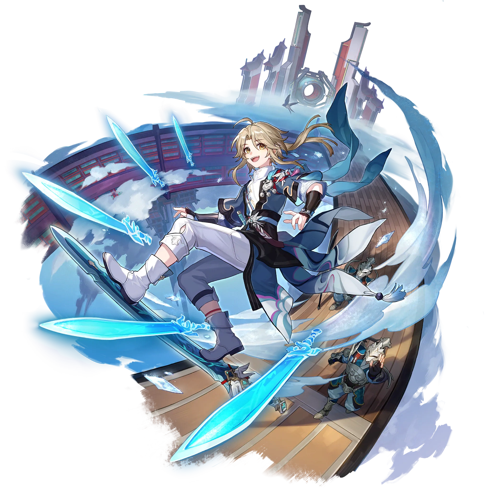
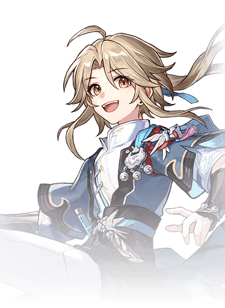

Descripcion del personaje
Yanqing es un personaje de cinco estrellas que pertenece a la Vía de la Cacería en Honkai Star Rail. Es un personaje con unos porcentajes de daño bastante altos en sus habilidades y destaca por poder aplicarse una gran cantidad de buffs al utilizar estas.
Una curiosidad sobre este personaje es que puede potenciarse a sí mismo entrando en un estado llamado Estocada Empática que le atribuye numerosos beneficios tales como aumentar algunos de sus parámetros, producir golpes adicionales y tener mayores posibilidades de congelar al objetivo golpeado. Su Habilidad Definitiva también potencia ciertos aspectos de Yanqing, pero tiene un coste de energía tremendamente alto.
Introduccion al personaje
Es un joven espadachín que sigue el camino de "La Caza" y utiliza el elemento Hielo en el combate. Yanqing es conocido por su habilidad con la espada, su velocidad y su gran destreza en combate, lo que lo convierte en un personaje ideal para infligir daño a enemigos individuales.
En la historia del juego, Yanqing es un teniente de la Flota Xianzhou Luofu bajo el mando del General Jing Yuan. Aunque es joven, es extremadamente talentoso y disciplinado, y tiene un fuerte sentido del deber hacia su nación y sus superiores. Su diseño y personalidad reflejan una combinación de determinación juvenil y un deseo por la perfección en el arte del combate.

Calidad del personaje

VIA del personaje
Caceria

Estadisticas del personaje
- PV: 892
- ATQ: 679
- DEF: 412
- VEL: 109